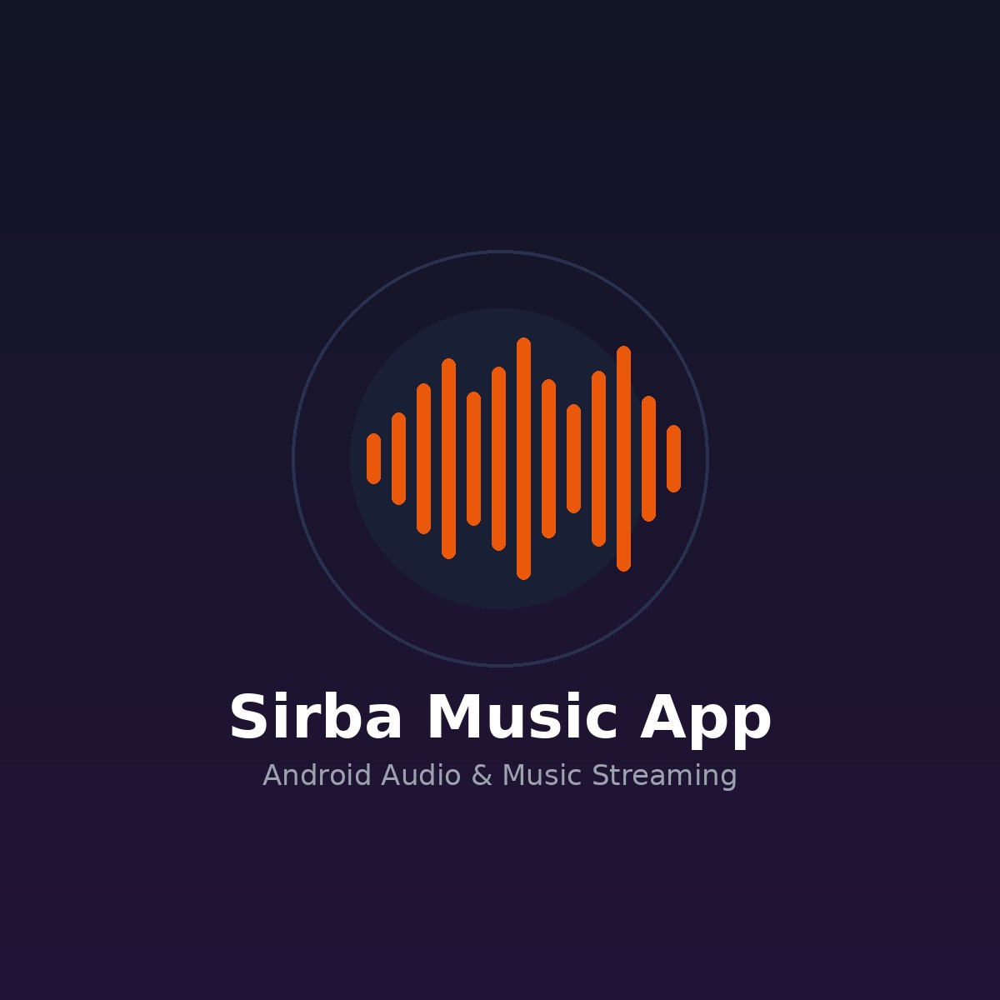

ANDROID • AD-FREE MUSIC PLAYER • SPOTIFY & YOUTUBE MUSIC IMPORT
Sirba: Ad-Free Android Music Player with Synced Lyrics
Sirba is an ad-free music player for Android that lets you import your Spotify or YouTube Music playlists and play them instantly — featuring real-time synchronized lyrics and seamless background playback.

1. The Problem: Ad Clutter & Playlist Inconvenience
Modern commercial music streaming platforms subject free-tier users to aggressive audio advertisements, restrictive skip limits, and locked offline playback. At the same time, music lovers spend years organizing their favorite playlists across separate platforms like Spotify and YouTube Music, making switching players cumbersome and disruptive.
Moreover, karaoke-style synced lyrics are often locked behind paid tiers or entirely absent in third-party offline players.
Sirba is here.
Import your Spotify or YouTube Music playlists and play them — ad-free, with synced lyrics. Sirba eliminates interruptions, allowing listeners on Android to seamlessly paste a playlist link and start listening immediately with synchronized, live-scrolling lyrics.
2. Architecture & Playlist Ingestion Engine
Sirba was engineered to provide effortless playlist portability without requiring users to manually rebuild their music collections from scratch:
Core Workflow:
Paste Playlist URL (Spotify / YT Music) → Metadata Parser & Track Resolution → Stream Aggregation → LRC Synced Lyrics Matching → Ad-Free Audio Engine
- Dual Platform Import: Users simply share or paste a Spotify or YouTube Music playlist URL. Sirba resolves track titles, artist names, album covers, and duration to reconstruct the playlist locally within seconds.
- 100% Ad-Free Playback: Delivers continuous, uninterrupted music playback without sponsor interruptions, banner ads, or commercial pauses.
- Millisecond-Precision Synced Lyrics: Fetches and parses timestamped lyrics (LRC format). Lines scroll automatically in sync with the song's audio position, allowing listeners to sing along or tap any lyric line to jump directly to that exact verse.
- Android Foreground Service: Keeps the music playing uninterrupted when switching apps or locking the screen, with full system notification controls (play/pause/skip) and lock-screen album artwork.
- Offline Caching: Automatically caches imported tracks locally on device storage, drastically saving cellular data for repeated listens.
3. Technical Challenges & Solutions
Challenge A: Cross-Platform Playlist Parsing Without API Rate Bottlenecks
Spotify and YouTube Music format playlist structures differently, often employing pagination or obfuscated track listing models.
Solution:
Engineered an intelligent URL dispatcher that identifies the source platform, extracts the public playlist identifier, and fetches track entries in batched asynchronous requests, achieving fast imports even on playlists with hundreds of songs.
Challenge B: Real-Time Synced Lyrics Timecode Alignment
Audio latency and buffering delays can cause lyrics to drift out of sync with actual vocal delivery.
Solution:
Built a reactive timecode observer linked directly to the player's audio clock. By checking the playback offset at a high-frequency polling interval, the UI highlights active lyrics within ±15ms accuracy and handles smooth kinetic auto-scrolling.
4. Key Value Proposition
- Zero Cost, Zero Ads: Pure music experience without subscriptions or audio ads.
- Effortless Portability: Bring over all your curated music from Spotify and YouTube Music in one click.
- Engaging Karaoke Experience: Live synchronized scrolling lyrics with interactive seek functionality.